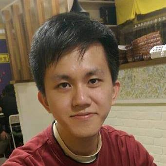

哥寫的不是程式,是態度!
Programming is kind of attitude to me!
趙士豪 Shih-Hao Chao
About Me
2013 - 國立中央大學 大氣系太空組 學士
2015 - 國立中央大學 太空科學所 碩士
2016 - 嘉義縣成功國小 教育替代役 役畢
2017 - 騏驥坊創客教育中心 首席工程師
Projects
Contect Me
colombo0718@gmail.com
colombo@chi-gi.com